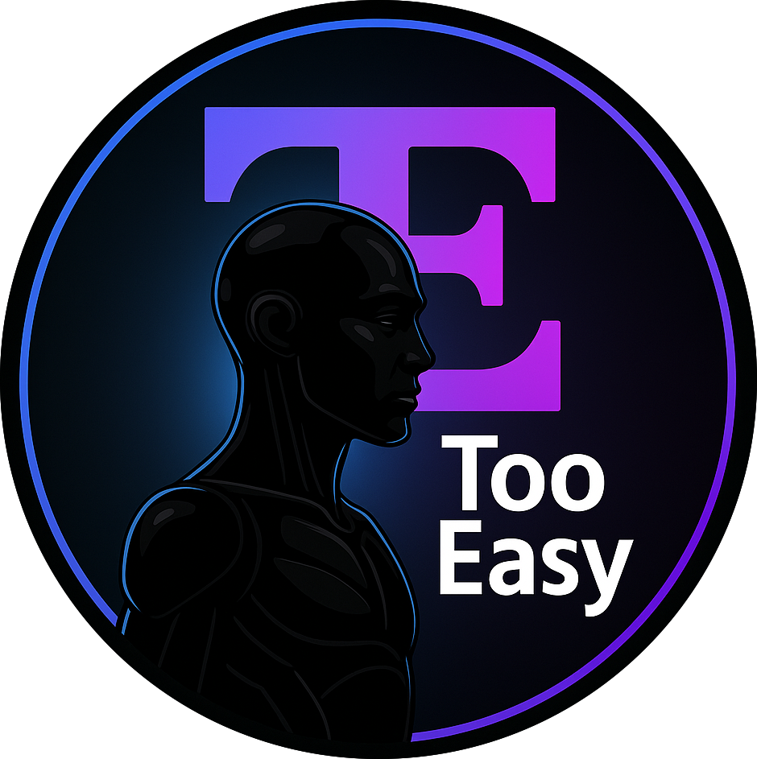

Haz tu negocio inteligente.Hazlo Too Easy.
Sistemas operativos impulsados por IA para reducir fricción y aumentar el control en todos los departamentos. Escala sin caos.
Conecta tu negocio con
Inteligencia Artificial.
Conectamos tus herramientas, automatizamos procesos y aplicamos IA donde realmente aporta control y velocidad.
Finanzas y control
"¿Cierres mensuales eternos?"
- Automatización de facturas y conciliación.
- Cashflow y previsiones en tiempo real.
- Auditoría continua por IA.
Operaciones internas
"¿Procesos manuales y repetitivos?"
- Workflows 100% autónomos.
- Reducción drástica de errores humanos.
- Escalabilidad sin aumentar plantilla.
Ventas y gestión
"¿Leads perdidos por falta de seguimiento?"
- Cualificación y scoring automático.
- CRM inteligente y autogestionado.
- Outreach personalizado a escala.
Atención al cliente
"¿Soporte colapsado?"
- Agentes IA empáticos 24/7.
- Resolución instantánea de tickets.
- Análisis de sentimiento en tiempo real.
Backoffice
"¿Enterrado en papeleo?"
- Lectura y extracción de datos via OCR.
- Generación automática de contratos.
- Archivo digital inteligente.
Integración y datos
"¿Información aislada en silos?"
- Conexión fluida entre herramientas.
- Dashboards unificados de toda la empresa.
- Centralización de la verdad.
Convertimos tareas en
procesos automatizados.
Analizamos cómo trabaja tu equipo y transformamos procesos manuales en sistemas claros, automáticos y eficientes.
Detectamos fricción
Tu equipo no necesita “trabajar más”. Necesita trabajar sin lastre.
Entramos, observamos y detectamos dónde se rompe el flujo: tareas repetitivas, pasos innecesarios, esperas, duplicidades y micro-errores que drenan energía cada día.
Lo que hoy parece “normal”, mañana será el primer cuello de botella que te frena el crecimiento. Nosotros lo encontramos y lo convertimos en claridad.
Actuamos de inmediato
No hacemos auditorías eternas ni promesas bonitas. Hacemos que el cambio se note rápido.
Cuando identificamos fricción, atacamos el punto exacto donde se acumula el caos: automatizamos, conectamos y dejamos el proceso funcionando con lógica real.
Resultados visibles desde el primer día: menos interrupciones, menos incendios, menos “¿quién lo hace?” y más control sin añadir carga al equipo.
Diseñamos a medida
Cada negocio tiene su ritmo. Cada equipo, su manera de operar.
Por eso no vendemos plantillas: diseñamos sistemas que se adaptan a tu forma de trabajar, no al revés.
Hablamos con cada departamento, entendemos su día a día y construimos un flujo claro, estable y escalable. Lo sientes porque tu operación deja de depender de “personas clave” y empieza a depender de procesos que sostienen el negocio.
Ejecutamos sin ruido
La mayoría teme automatizar porque “puede romper algo”. Nosotros trabajamos para que eso no pase.
Probamos, validamos y desplegamos sin interrumpir la operativa, con un enfoque limpio: cambios progresivos, medidos y estables.
El resultado es simple: menos estrés, menos errores, menos fricción interna… y una empresa que se siente más ligera, más profesional y más preparada para escalar.
Haz tu negocio inteligente.
Hazlo Too Easy.
Nuestros casos de éxito
Veredictos reales de personas que ya han hecho su negocio Too Easy.
“Antes dedicaba gran parte del día a gestionar correos y organizar clientes. Ahora todo está automatizado y centralizado en un solo sistema. Too Easy me ayudó a crear la web, un dashboard para gestionar clientes y un sistema de email marketing que realmente trae resultados. He reducido mi carga diaria alrededor de un 50 % y puedo centrarme en conseguir más clientes y hacer crecer el negocio.”
Daneury Silverio
“Nuestro mayor problema era la atención al cliente y la falta de tiempo para crear contenido. Con el sistema que implementó Too Easy respondemos en segundos y solo intervenimos cuando hace falta. Hemos ahorrado hasta un 70 % del tiempo en atención al cliente y ahora siempre tenemos contenido para redes sin bloquear al equipo. La diferencia se nota en el día a día.”
Vie-Riche Paris
“La gestión de facturas y el papeleo nos quitaban demasiado tiempo. Con la automatización que hizo Too Easy ahora todo está organizado y controlado sin esfuerzo. La IA gestiona clientes, facturas y documentos, y nosotros podemos centrarnos en vender y atender mejor a nuestros clientes. Nos quitamos un peso enorme de encima.”
Bryan Rubiera
“Queríamos mejorar nuestra visibilidad online y posicionarnos como un referente real en cirugía masculina. Con Too Easy trabajamos el posicionamiento SEO apoyado en inteligencia artificial y la estrategia de contenidos. El resultado fue un aumento progresivo de citas y una presencia mucho más sólida en buscadores. Hoy la clínica atrae pacientes mucho más cualificados.”
Dr. Christoph Jethon
¿Listo para transformar tu negocio?
No se trata de trabajar más.
Se trata de eliminar lo que sobra.
En Too Easy ayudamos a empresas que han crecido
y ahora sienten que su operación les frena.
Analizamos cómo trabaja tu equipo, detectamos fricción real y convertimos tareas repetitivas en procesos automáticos claros, estables y eficientes.
Sin promesas vacías. Sin humo.
Solo sistemas que funcionan.
Hazlo Too Easy.
Filosofía Operativa
Nuestra misión es devolver el enfoque a los líderes.
Donde hay caos, instalamos arquitectura. Donde hay ruido, creamos silencio.
Too Easy • Sistemas de automatización profesional.
Diseñamos sistemas operativos internos para empresas que quieren crecer sin fricción. Automatización e inteligencia artificial aplicada al negocio real.
Soluciones
- Automatización
- Integración
- IA aplicada
Metodología
- Análisis
- Diseño
- Implementación
Company
- Sobre nosotros
- Casos
- Contacto
Sistemas claros.
Procesos que funcionan.
Decisiones sin ruido.